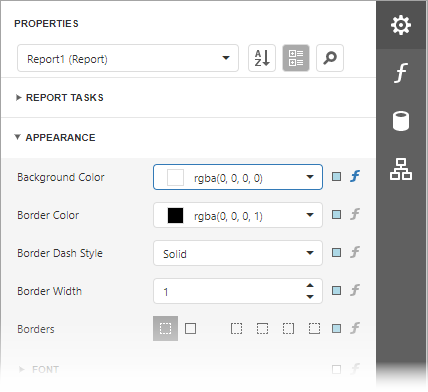

Properties Panel
This document describes how to use the Properties panel to access and customize the report and report element properties.

Select a Report Element
Do one of the following to access an element's properties:
Select an element from the drop-down list at the top of the Properties panel.

Select an element on the Design Surface and click the
 tab on the side panel to invoke the Properties panel.
tab on the side panel to invoke the Properties panel.Select an element in the Report Explorer panel and click the
 button.
button.Click an element’s smart tag to invoke a panel with the element’s most commonly used properties.
Switch Between Display Modes
Element settings can appear in alphabetical order or in categories based on their purpose. Use the buttons next to the selected element to switch between these display modes.

Display Property Descriptions
The Properties panel displays hints with property descriptions. To display the description, select the property and click the information symbol (i) to the left of the property editor:

If necessary, you can localize property descriptions.
Change Property Values
Each record consists of a property's caption, a value editor, and an optional property marker. To change a property's value, select the property and specify its value in the editor.

Certain properties contain nested properties which can be accessed when you click the header.

The property marker indicates if the property's value was changed:
If a property stores a default value, its property marker is gray.

If a property's value was changed, the property marker becomes white.
If a report style supersedes a property's value, the marker is light blue. This applies to appearance properties (for instance, an element's BackColor, Font, Borders).

Reset Property Values
Click the property marker to the right of the editor. Select Reset in the invoked popup menu to restore the default property values.
Note
The Reset command resets the expression and the value you specified in the property's editor.
Specify Expressions
The Properties panel allows you to specify expressions that can calculate the value at runtime when a document is generated. Click the f-marker to invoke the Expression Editor.

Specify an expression in the invoked Expression Editor.
The Properties panel highlights properties that have an assigned expression.

Search Properties
Click the  button to show the search box. When you type in the search box, the Properties panel filters the list of available properties and highlights the search string in the records.
button to show the search box. When you type in the search box, the Properties panel filters the list of available properties and highlights the search string in the records.
Use Actions
In the categorized mode, the Properties panel contains the context-sensitive Actions group that provides the most commonly used actions for the selected report element:
Add new bands, if you selected a report.
Manage a table element's cells, rows, and columns.

Align and position report elements (for instance, align and resize elements to the snap grid, specify horizontal and vertical alignments) for individual and multiple selected report elements.